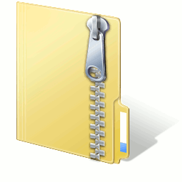
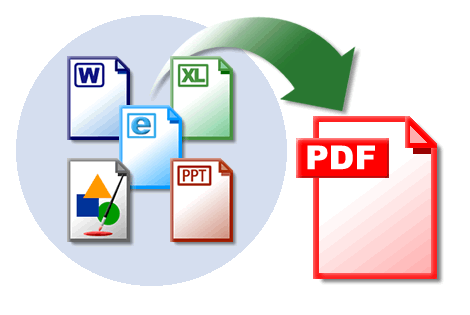

PDF
- ZIP
Op deze pagina hebben we het over zeer algemeen bruikbare programma's, zoals Acrobat reader, 'zip' functionaliteit en de mogelijkheid om zelf pdf bestanden te kunnen aanmaken vanuit om het even welk programma.
Op het internet, via e-mails, enz. worden enorm veel pdf en zip bestanden beschikbaar gesteld of uitgewisseld. Het is daarom absoluut noodzalkelijk deze minstens te kunnen lezen (openen). Het is interessant ze zelf ook te kunnen aanmaken.
De lokale kopies van de programma's kan je hier vinden.
Naam: Acrobat reader
Categorie: Acrobat reader
Waardeoordeel: 5 (is meestal al geinstalleerd op
een nieuwe pc)
Waardeoordeel op een schaal van 5 .. 1 (5='need to have', 3='good
to have', 1='nice to have')
Beschrijving:
Acrobat reader is onmisbaar: vele bestanden op het internet komen
als pdf binnen. Meestal is Acrobat reader al geïnstalleerd
op een nieuwe pc.
Naam: 7zip
Categorie: zip compatible
Waardeoordeel: 5
Waardeoordeel op een schaal van 5 .. 1 (5='need to have', 3='good
to have', 1='nice to have')
Beschrijving:
7zip is één van de interessante 'winzip' compatibele
programma's. Je kan er ook iso, en een heleboel andere gecomprimeerde
bestanden mee lezen. Het is beschikbaar in 32 en 64 bit. De 'unzip'
functie is ingebouwd in Vista en Windows 7, maar het aanmaken
van een zip bestand niet. Het is de bedoeling van een 'zip' programma
een groot bestand te comprimeren tot een kleiner (kortere e-mail
bijvoorbeeld, daarom ook de 'bankschroef' in het logo) of vele
kleine bestanden samen te verpakken in één groter
(om het bijvoorbeeld in één bestand als bijlage
te kunnen e-mailen). Vele bestanden van het internet komen als
'zip' binnen.
Naam: Pdfill
Categorie: pdf writer
Waardeoordeel: 5
Waardeoordeel op een schaal van 5 .. 1 (5='need to have', 3='good
to have', 1='nice to have')
Beschrijving:
pdfill is een zeer interessante 'printer': je kan ermee vanuit
elk programma pdf bestanden 'printen'. Belangrijk is wel dat
ook Ghostscript en JRE op je computer moeten aanwezig zijn. Werkwijze extra
installaties. Extra functionaliteit is dat je met pdfill
ook pdf bestanden kan 'aan mekaar plakken', pagina's wissen,
enz. Ook deze extra functionaliteiten zijn zeer nuttig! Pdfill
installeert een extra printer op je pc. Als je die 'printer'
gebruikt, zal een normaal pdf bestand worden aangemaakt. Met
pdfill kan je een pdf bestand maken vanuit om het even welk programma.
Naam: IZarc
Categorie: zip compatible
Waardeoordeel: 2
Waardeoordeel op een schaal van 5 .. 1 (5='need to have', 3='good
to have', 1='nice to have')
Beschrijving:
IZarc is één van de interessante 'winzip' compatibele
programma's. Je kan er ook iso (en andere cd formaten) en een
heleboel andere gecomprimeerde bestanden mee lezen. Interessant
is ook dat het kan werken in het Nederlands én dat het
naar een hele reeks bestandsformaten kan wegschrijven (niet alleen
zip formaat). Het bestaat alleen maar in een 32 bit versie.
Naam: Primo PDFdfill
Categorie: pdf writer
Waardeoordeel: 4
Waardeoordeel op een schaal van 5 .. 1 (5='need to have', 3='good
to have', 1='nice to have')
Beschrijving:
Primo PDF converteert vrijwel ieder bestand met één
muisklik naar een standaard PDF-bestand.